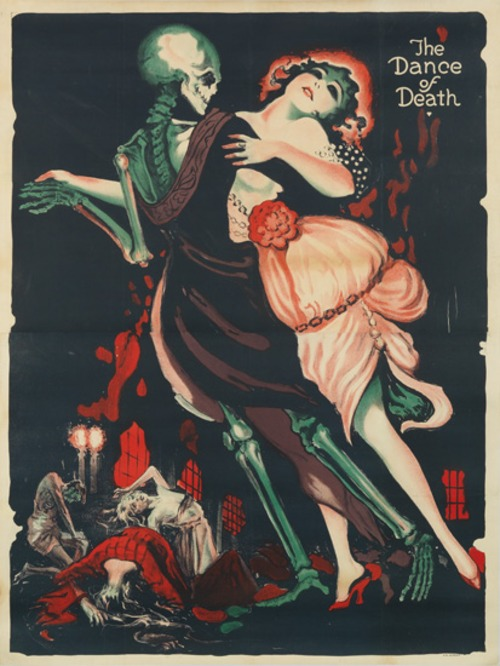
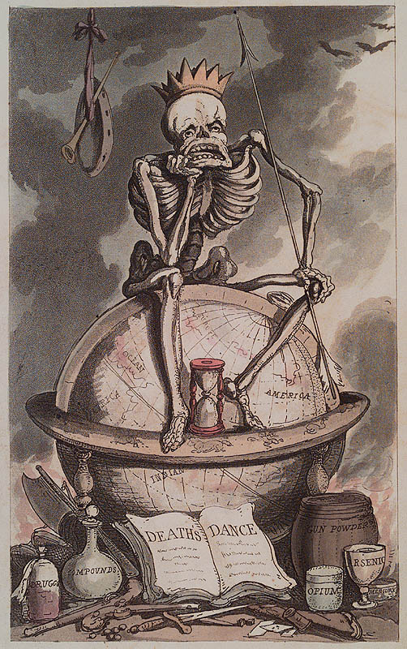
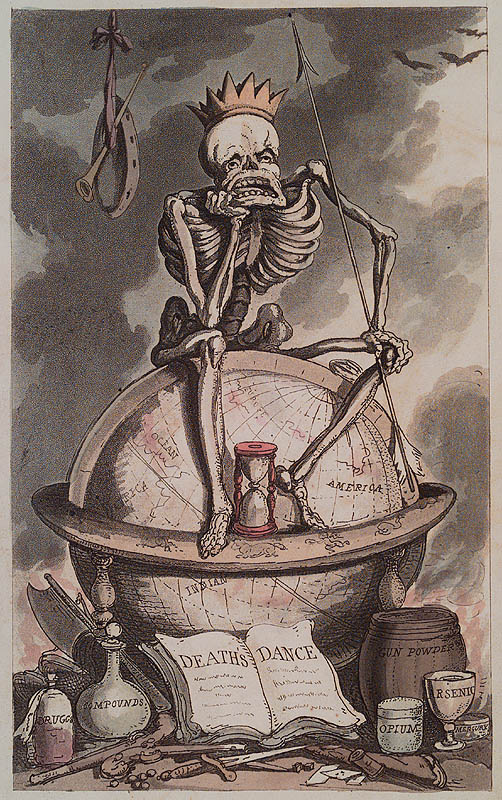

Once long ago there lived on the banks of a beautiful Canadian river a powerful Indian tribe. In the tribe was a very handsome young man, very brave and a great hunter. He was loved by a young Indian girl who was likewise very beautiful. But the young man repulsed her love; he was a great warrior; he was busy getting ready for the autumn and winter hunt and he had little time for such nonsense as love. He frankly told the young girl that he did not love her and that she must follow him no more.
Now, the young girl was very angry, for she was proud and beautiful and of a high temper, and she was little used to have her desires refused. She had a very strange power which the Spirit of the Night had placed in her cradle at her birth. It was a power by which she could do great harm to mankind, but she had never used it in all her life. But now in her anger she said to the young man as he went away with his comrades, "You may go; but you will never return as you go." The young man gave no heed to her words; he neither cared for her nor feared her, and with a merry heart he went his way with his companions.
One day many weeks later, when they were far away in the North Country in the land of ice and snow, the young man became suddenly ill. Then he went raging mad with what the Indians call the wild "madness of the woods." The girl's strange power was upon him. In the band of hunters was the young man's older brother, a very strong and powerful man. He knew what ailed his brother. He went to the river and sang the strange weird song that calls the Evil Spirit of the Stream to man's assistance. Now this was a very dangerous thing to do, for the Spirit of the Stream had no love for cowards; but the man being brave had no fear, as he wished to save his brother's life. After the usual custom, he dared the Evil Spirit of the Stream to come to him. Soon the monster appeared in answer to the challenge, its great eyes shining like fire on the water and its horns rising above the surface. It asked the man what he wished, and the man answered, "I wish you to help me; I wish my brother to be in his right mind again and free from the maiden's wicked power." Then the monster said, "You may have what you wish if you are not afraid"; and the man said that he feared nothing. And the monster asked, "Do you fear me?" And the man said "No." Then said the monster, "Take hold of my horns and scrape them with your knife." The man did as he was told, and he scraped and scraped until he had taken a handful of powder from the monster's horns.
The monster wondered at the man's bravery and said, "Go to your camp now; put half the scrapings into a cup of water and give it to your brother to drink; put the other half in another cup of water and give it to the maiden to drink when you go back home, and all will be well." Then the Indian returned to the camp and did as the monster had told him, and his brother drank the powdered water and soon got back his senses and his strength.
When the hunt was ended, the band returned home. It was night in the spring-time when they reached their village; the snow had already left the ground and the trees were in bud. In a great tent in the village the annual Spring Dance was in progress, and all the people of the place were gathered. Among them was the maiden lover dancing merrily with the rest. None of the hunting band entered the tent, but they watched the dance from outside the door. The elder brother had mixed a drink as the Evil Spirit of the Stream had told him, by placing the remainder of the powder in a cup of water. And he stood at the door waiting for his chance to give it to the girl. The night was hot and still, and he knew that the dancers would soon grow warm and thirsty. At last the maiden lover came to the door to breathe the cool night air; the man passed her the cup, and without looking at him or knowing him she took it and gladly drained it dry because of her great thirst; then she went back to the dance.
Then a very strange shadow came upon her. When she began to dance she was a young and beautiful girl, the loveliest of all the maidens in the land. But after she had drunk the magic cup she grew gradually older. Her friends noticed the change and stood rooted with terror; the tales of their parents came back to their memories; they knew that the girl was now passing through the Dance of Death from which no power could save her. Their fears were well founded. At each turn of the dance, a year was added to the girl's life; the colour faded slowly from her cheeks; her shoulders slowly stooped; wrinkles appeared upon her face; her hands trembled as if palsied; her feet lost their nimbleness and her tread was no longer light. She was growing old in the Dance of Death. Yet she was unconscious of it all, and her life ebbed away without her knowing it. At last she reached the end of the room, tottering to the music of the dance; but old age was now upon her, and she fell dead upon the floor. Her power over the young man was forever ended, for the Spirit of the Stream had brought about the Dance of Death. "She will trouble you no more," said the elder Indian to his brother as he gazed upon the shrunken face and form, "her dance is forever ended." The people wondered greatly at the strange happening and their merry-making was hushed; and since that day the Indians in silent fear still point you on the river to the scene of the Dance of Death.
 

Transcribed by Cyrus MacMillan, 1917. The writer's deepest thanks are expressed to the nameless Indians and "habitants," the fisherman and sailors, "the spinners and the knitters in the sun," from whose lips he heard these stories.
Back to Top